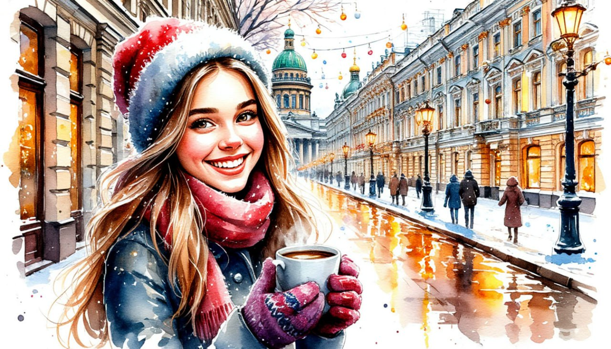

Праздник Рождества в Санкт-Петербурге. Тур комфорт

Даты тура:
со 2 января 2026 года (пт) по 6 января 2026 года (вт) и
с 3 января 2026 года (сб) по 7 января 2026 года (ср)
Стоимость тура:
- 23 600 р. - взрослый
- 23 600 р. - пенсионеры/школьники
- 30 600 р./чел - одноместное размещение
По программе:
- - Гатчина
- - Дворец Белосельских-Белозерских
- - Царское село и Янтарная комната
- - Экскурсия на Дворцовую площадь
- - Петропавловская крепость
- - Петропавловская крепость
- - Вечерняя экскурсия по новогоднему городу
Программа тура:
1 день:
- 17-00- выезд из Костромы от ТРЦ "РИО"
2 день:
- Прибытие в Санкт-Петербург.
- Завтрак в кафе города.
- Обзорная автобусная экскурсия по Санкт-Петербургу. Наша зимняя петербургская сказка открывается автобусной обзорной экскурсией «Новогодний Санкт-Петербург» с осмотром парадного центра города. Все самые знаменитые достопримечательности и невероятные «открыточные виды» сказочного города!
- От Невского проспекта начинается самый удивительный город Земли. Аничков мост - один из символов города, Екатерининский сад перед знаменитой «Александринкой», Публичная библиотека, Гостиный двор, канал Грибоедова, с живописными видами на Казанский собор и перспективой на Адмиралтейство, Марсово поле... Вы увидите грандиозный Исаакиевский собор, уступающий своими размерами только трем соборам в мире – соборам Святого Петра в Риме, Св. Павла в Лондоне и Св. Марии во Флоренции. Вы полюбуетесь величественными архитектурными ансамблями Дворцовой и Сенатской площадей.
- Посещение Казанского собора
- Экскурсия по территории Петропавловской крепости Петропавловскую крепость по праву называют «сердцем» Санкт-Петербурга, ведь именно с ее закладки и началась история нашего города в начале XVIII века. В первые годы существования фортеции территория внутри крепостных стен, по сути, и являлась самим городом. И хотя впоследствии Санкт-Петербург далеко шагнул за стены крепости, но внутри все осталось неизменным. В ходе экскурсии по территории крепости Вы пройдете по одной из первых улиц города, увидите триумфальные ворота и главную Соборную площадь.
- Посещение Рождественской ярмарки. Приобрести подарки, сладости, познакомиться с кухней других стран и отведать традиционный согревающий напиток из горячего красного вина и ароматных специй – глинтвейн.
- Обед в кафе
- Заселение в гостиницу*
- * River Palace Hotel – изысканный бизнес-отель
- Свободное время.
3 день:
- Завтрак в отеле «шведский стол»
- Свободное время в городе ИЛИ
за дополнительную плату (по желанию) СТРОГО ПРИ БРОНИРОВАНИИ ТУРА
- выезд на экскурсию во Дворец Белосельских-Белозерских. Цена экскурсии 750 руб/чел – взрослые, 650 руб/чел дети до 17 лет и пенсионеры. - Во дворце сохранились подлинные интерьеры, среди которых выделяются парадные залы на 2-ом этаже: Дубовый зал (бывшая библиотека), использовавшийся как малый концертный зал, Картинная галерея, Парадная столовая, Бежевая гостиная, Зеркальный (бальный) зал с прекрасной акустикой, так как изначально предназначался для проведения концертов и до сих пор используется в этом качестве, Золотая Малиновая гостиная. Во всех этих и других залах сохранилась художественная отделка середины- конца XIX века: камины, светильники, лепнина, картины, зеркала, мебель и многое другое.
- Придя во дворец на экскурсию, Вы увидите великолепные интерьеры дворца и узнаете все интересующие Вас подробности о его архитекторе, владельцах и событиях, связанных с этим старинным особняком. Цена экскурсии 750 руб/чел – взрослые, 650 руб/чел дети до 17 лет и пенсионеры.После экскурсии во дворец свободное время в городе.
- 18-00 ДЛЯ ВСЕХ ( входит в стоимость тура) Вечерняя экскурсия по Санкт-Петербургу. Мы отправимся по ярко освещенному, нарядному Невскому проспекту. Каждый год к Новому году он преображается, меняется тематика его украшений, фасады зданий украшают праздничные гирлянды и мерцающие волшебным светом инсталляции. Потом прогуляемся по Семимостью. Оттуда открывается вид на семь мостов, и по легенде, загаданное там желание непременно сбудется. В этом удивительном месте вас встретит светящая фигура Ангела — с ним получаются особенно волшебные фотографии. Великолепная, новогодняя атмосфера города на Неве покорит вас миллионами огней иллюминации! Вы попадете в настоящую Новогоднюю сказку и пополните свой фотоальбом самыми зимними, самыми новогодними, самыми волшебными фотографиями! Во время экскурсии вы увидите фантастический наряд зимнего Петербурга. Самые великолепные места города – Дворцовую и Исаакиевскую площади, Невский проспект, Никольский и Троицкий соборы и многое другое.
- Возвращение в отель.
4 день:
- Завтрак в отеле «шведский стол»
- Загородная экскурсия в Царское Село «Жемчужина галантного века».
- Проехав 25 км по старой Царскосельской дороге, Вы примерно через час окажетесь в блистательном мире бывшей официальной резиденции русских императоров – Царском Селе. В ходе экскурсии Вы узнаете, когда появился этот пригород Санкт-Петербурга, какие события с ним связаны и почему его часто называют «город муз». Особую известность Царскому Селу принес роскошный и неповторимый Екатерининский дворец.
-
За дополнительную плату (по желанию) СТРОГО ПРИ БРОНИРОВАНИИ ТУРА:
экскурсия в Екатерининский дворец - взрослые – 1 500 р., пенсионеры - 900 р., дети с 14 до 18 лет – 900 р., дети с 7 до 14 лет – 600 р., дети с 0 до 7 лет - бесплатно Студенты очных факультетов при наличии студенческого билета - 900 р. - ВНИМАНИЕ! Участники специальной военной операции, члены семьи участников специальной военной операции – БЕСПЛАТНО.
- Одна из самых блистательных резиденций династии Романовых, в которой сохранились интерьеры середины XVIII века, выполненные в стиле «русского барокко». «Золотая анфилада» залов Екатерининского дворца, созданная архитектором Растрелли, была задумана, чтобы поразить любого своим богатством и пышностью. «Янтарная комната», входящая в Золотую анфиладу, приумножила славу Екатерининского дворца.
- Выезд на экскурсию в Гатчину.
- Хотите окунуться в праздничную атмосферу настоящего императорского замка? Тогда отправляйтесь с нами в предрождественское путешествие в Гатчину - самый необычный пригород Петербурга, который окутывает флёр различных легенд и преданий!
- Вы увидите:
- Площадь Коннетабля — площадь в центре города с обелиском, призванным славить наследника российского престола — будущего императора Павла I.
- Ингербургские ворота — въездные ворота в Гатчину. Раньше за воротами располагалась небольшая крепость Ингербург, которая охраняла въезд в великокняжескую резиденцию.
- Собор Святого апостола Павла — кафедральный собор, возведённый по повелению императора Николая I и ставший главной городской доминантой.
- Адмиралтейские ворота на границе Дворцового парка, напоминающие триумфальную арку. В прежние времена они служили главным входом в парк.
- Памятник Павлу I — бронзовую копию парадного портрета императора, выполненную скульптором Витали, за которую он получил орден Святой Анны.
- Обед в кафе города
- Выезд из Санкт-Петербурга
5 день:
Прибытие в Кострому в первой половине дня (ориентировочно)
В стоимость тура входит:
- - проживание в гостинице*
- * River Palace Hotel – изысканный бизнес-отель (Номер реестровой записи: С782024005857)
- - питание: 3 завтрака + 2 обеда
- - услуги гида-экскурсовода
- - экскурсионная программа
- - автобусное обслуживание по программе тура
Дополнительно оплачиваются (по желанию) СТРОГО ПРИ БРОНИРОВАНИИ ТУРА:
- - Экскурсия во Дворец Белосельских-Белозерских - 750 руб/чел – взрослые, 650 руб/чел – дети до 17 лет и пенсионеры
- - Экскурсия в Екатерининский дворец - взрослые – 1 500 р., пенсионеры - 900 р., дети с 14 до 18 лет – 900 р., дети с 7 до 14 лет – 600 р., дети с 0 до 7 лет - бесплатно. Студенты очных факультетов при наличии студенческого билета - 900 р.
- ВНИМАНИЕ! Участники специальной военной операции, члены семьи участников специальной военной операции – БЕСПЛАТНО.
Стоимость тура не зафиксированы и могут быть изменены в большую или меньшую сторону в зависимости от уровня спроса в любой момент.
Время начала экскурсий и их порядок указано ориентировочно.
Фирма-исполнитель оставляет за собой право замены экскурсий без уменьшения общего объема экскурсионной программы.
По вопросам бронирования обращайтесь: